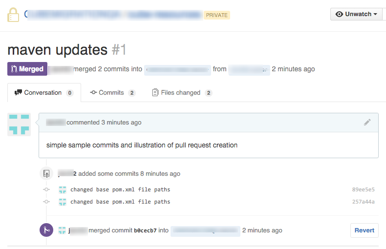
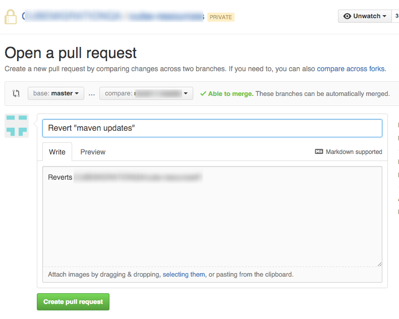
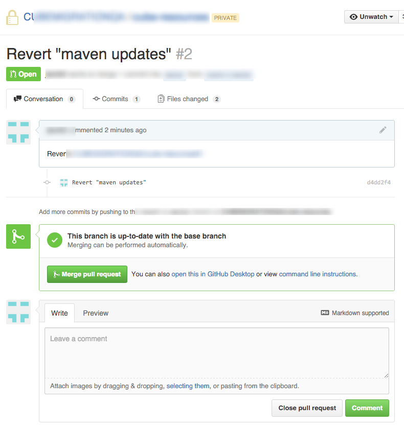
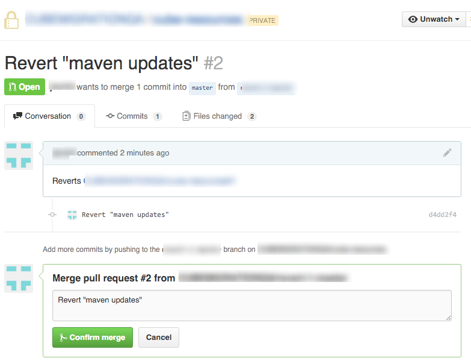
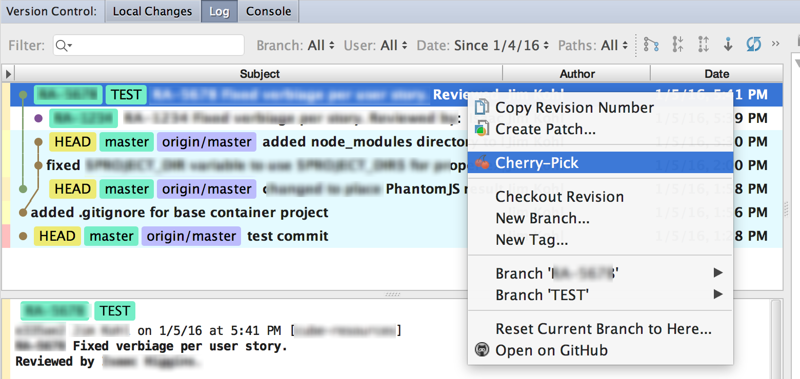
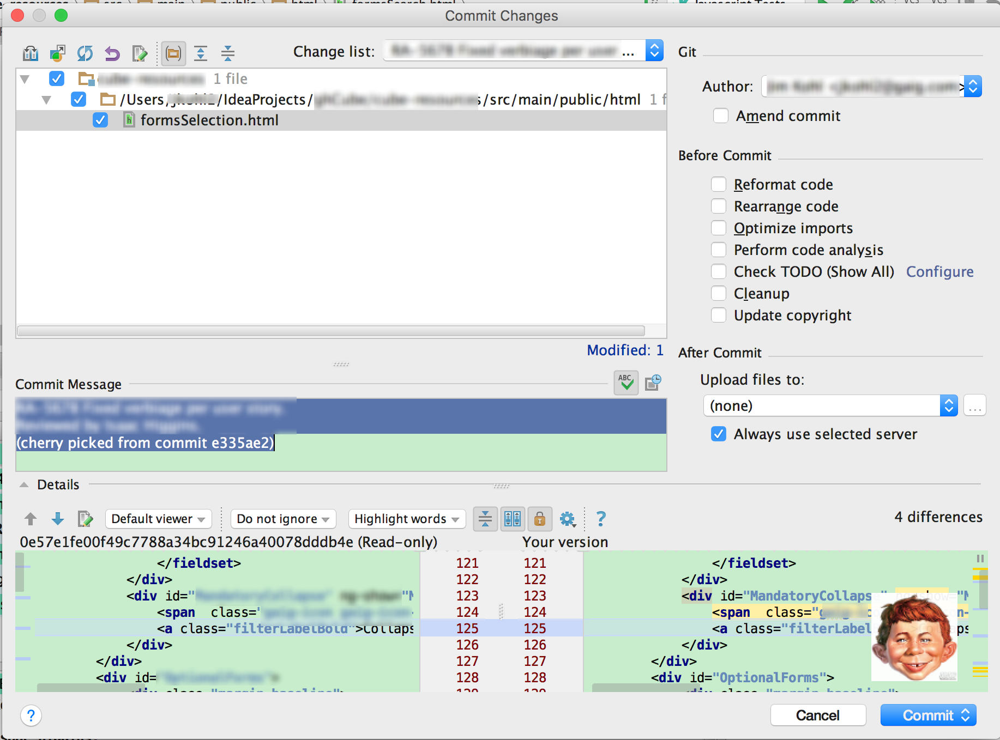
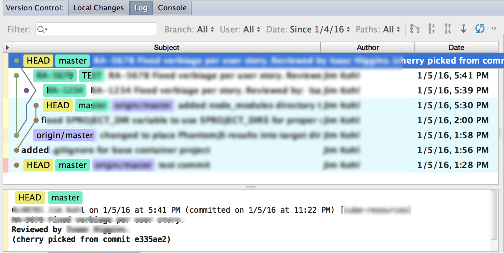
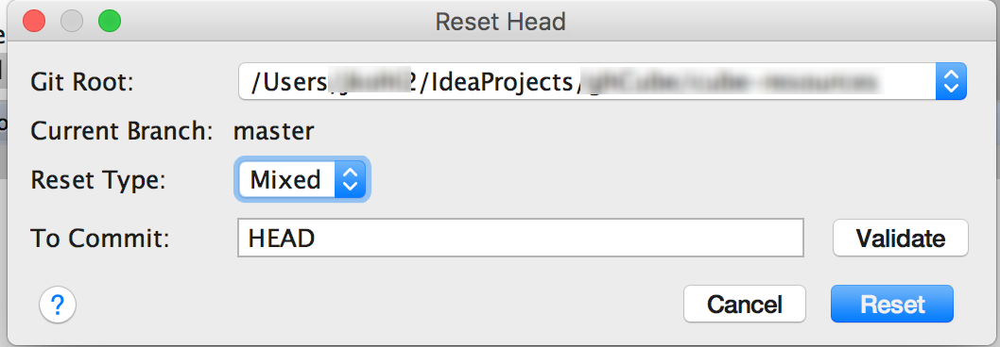

Contents
- Introduction
- Prerequisites
- Undoing What You've Done
- Revert in GitHub
- Cherry Picking
- Reset
- Use Local History
- For Further Reading
Introduction
This section discusses techniques for reverting changes that have been made.
Prerequisites
- Committed changes that you need to undo
Undoing What You've Done
You may realize that you want to discard a commit or completely go back to an older version.
You can use a variety strategies to accomplish this:
- Use IntelliJ's Local History to find an older version of your file and merge your changes by hand
- Use Revert to a specific version
Revert in GitHub
One technique that can be useful in undoing the most recent commit is to use the Revert button next to the recent merge in GitHub.

Once you click on it, a Pull Request will be opened for the Revert.

Click the Merge pull request button.

Click Confirm merge and you're finished.

Cherry Picking
If you are needing to regress some code, you can use this technique, to pull an older branch / commit and cherry pick it. Once you commit it, it will merge into the master branch.
Select a branch:

View the commit's original comments and change list. Select the portions which you want.

Once you've committed, you'll notice that the changes have been applied to master. 
Reset
If you wish to bring the upstream Repository or your local repository back to a prior version, you can use Reset.

Reset Type
Choose the reset Type based upon how you want to bring these changes back into your working tree:
- Mixed (default) - The index is reset while the working tree is not (you'll get a summary). (changes preserved but not marked for commit).
- Soft - HEAD pointer is moved without updating the index and the working tree (your work remains intact)
- Hard - both the working directory and index are changed to the specified commit.
Commit Point
The Commit text box allows you to specify where you want to point the current HEAD to. You can specify via:
- a commit hash (SHA-1 index)
- an expression:
~ where n = *number of commits backwards between the latest commit (HEAD) and the required commit*
Use Local History
This technique utilizes IntelliJ's Local History viewer to select, compare and revert to older versions. You can use this technique to go back and change files individually, then recommit and push to upstream.